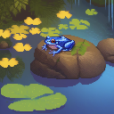

Continuing your journey, you come across a breathtaking waterfall cascading down majestically over huge rocks. The sound of rushing water echoes through the jungle creating a soothing melody. At the base of the falls, there is a small pool surrounded by vibrant flowers blooming in various colors. Their fragrance fills the air making everything around feel magical. Suddenly, something catches your eye underneath one of the fallen leaves floating on top of the pond. It’s another creature – a tiny frog with iridescent skin reflecting all shades of blue. Intrigued, you lean forward slowly trying not to disturb the delicate ecosystem surrounding the pond.
